Rooms that change shape
Big rooms split into smaller ones with walls that slide across the middle. Until now the lights had no idea that had happened. Cooper Lighting called this project Dynamic Space Partitioning. I designed the first version anyone could run from a phone: move the wall, and the lights follow on their own.
An industry first. Nothing like this existed on a phone in connected lighting
- Role
- Lead Experience Designer
- Company
- Cooper Lighting Solutions (Signify)
- Runs on
- Phone and computer
- Scope
- From first research to launch
- Team size
- 15 people across the company
- Designed
- 2023 to 2024, in Figma
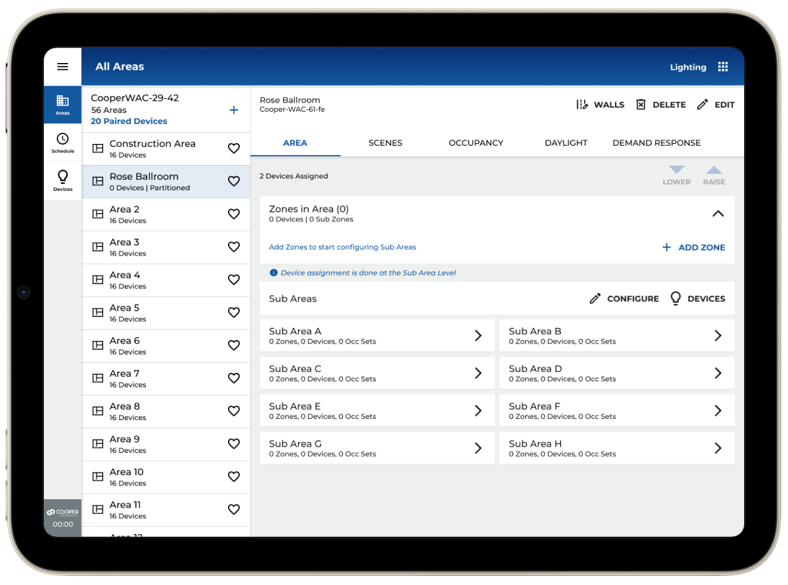
01 The idea
What is this actually about?
Big buildings are full of rooms that change size. Hotel ballrooms, conference halls, school cafeterias, training rooms. They all have walls that slide or fold across the middle, turning one big room into two or three smaller ones whenever it suits.
The moment that wall closes, it is a different place. A different number of people. Different lighting. And whoever is in one half should not be able to dim the other half by accident.
The catch was that the lighting system had no idea the wall had moved. Somebody had to go and reprogram it by hand. This project fixed that. A small sensor sits on each wall watching whether it is open or shut. When the wall closes, the system splits the lights into two independent halves by itself.
Each half then behaves like its own room. It notices when someone walks in. It keeps its own saved lighting settings. And the switch on its wall controls only its own lights.
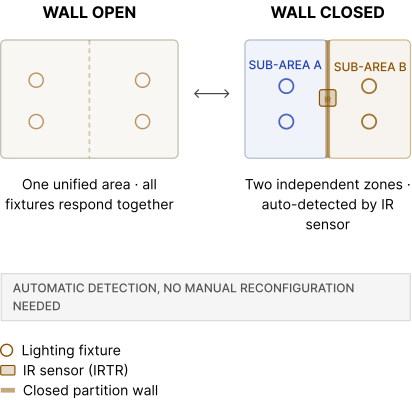
What this achieved
1st Time this had ever been possible from a phone in connected lighting
40 to 60% Less time spent setting a building up on site, according to the field teams
~90% Fewer requests the app sends the server to open a room’s page
11+ Serious problems found and fixed before anyone wrote a line of code
3 New kinds of customer the company could sell to: hotels, schools, big campuses
0 Steps anyone has to take when a wall opens or closes
02 The problem
Nobody had done this before
Splitting rooms is not new. For decades, electricians have rewired and reprogrammed lighting controllers by hand every time a room changed shape. What was new was the expectation that the system should just handle it, and that the people setting it up would do it from the phone already in their pocket.
The bit that made it hard
Setting this up was only possible in old desktop software. The phone app had no idea rooms could split at all: no splitting rooms, no smaller rooms, no walls, no sensors. And there was nothing to copy. Not inside the company, and not anywhere in the industry. We were starting from a blank page.
What made it complicated
This was not a case of tidying up a form. It added a whole new layer to the way the app thinks about a building.
-
Six new things the app had to understand
- A room that is allowed to split
- The smaller rooms it splits into
- The sliding walls, and whether each one is open or shut
- The sensor on each wall that notices the change
- Which group of lights belongs to which smaller room
- Moving a light or a switch from one room to another
-
Six things working against us
- Nothing anywhere in the industry to learn from
- A three-step setup that had to fit a phone screen
- People doing this on site, often with patchy signal
- Wall setup had to survive someone rearranging the rooms later
- Room pages went slow if they asked the server for too much at once
- Older equipment that knows nothing about splitting still had to work
Let’s set one up
Here is a real ballroom with 7 sliding walls and 8 smaller rooms. Each smaller room has 2 chandeliers, an inner and an outer strip of cove lighting, a switch on the wall, and one simple on-off wire that reports where the wall is.
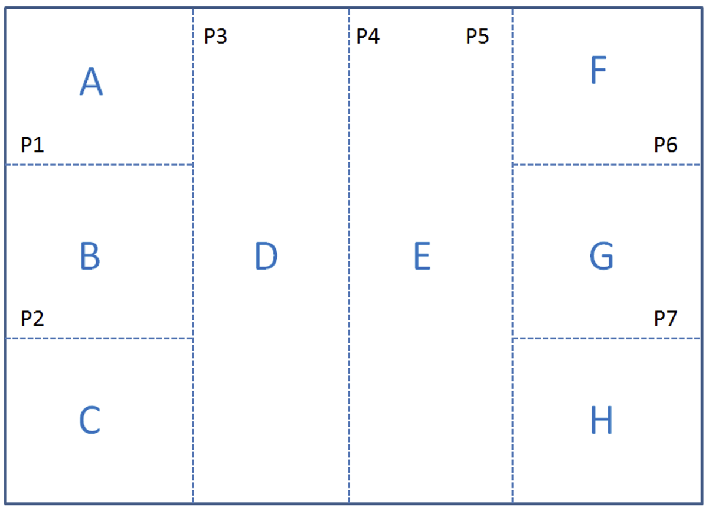
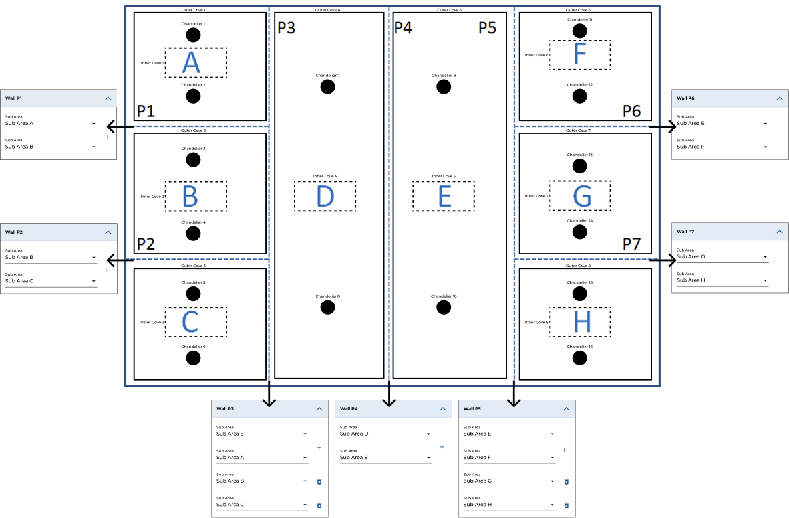
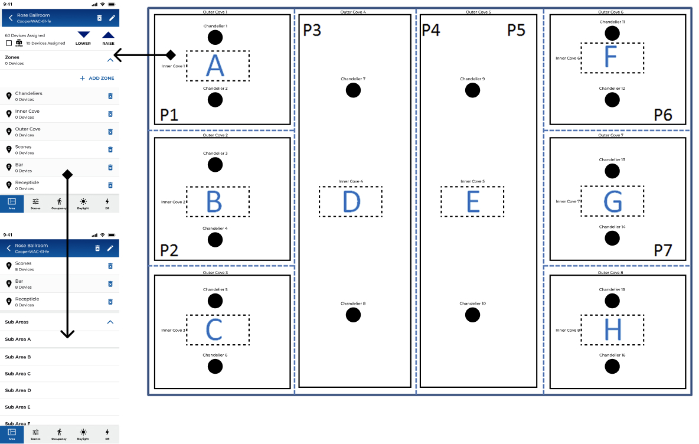
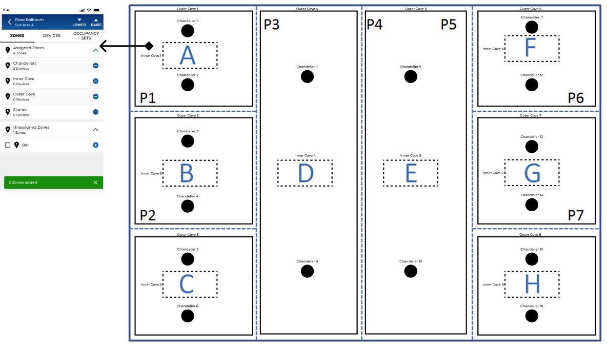
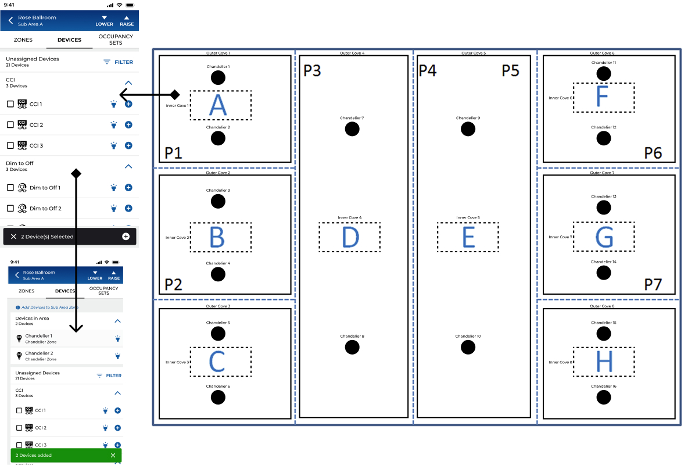
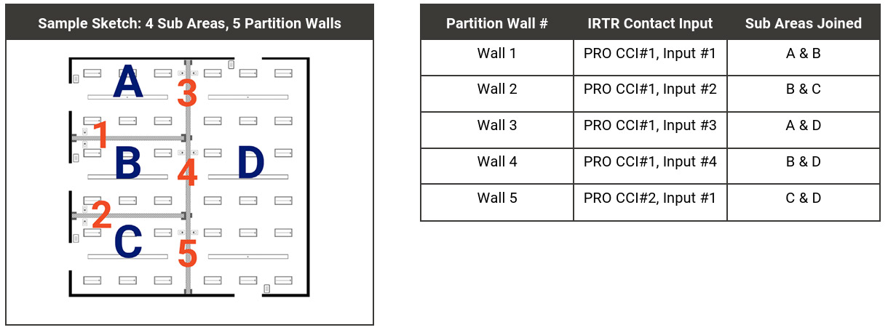
03 My part in it
I led the design
I was the lead designer on this feature and owned how it worked, start to finish, on both the phone and the computer. That meant working out where a splitting room fits into the rest of the app. Running the interviews with people who do this job for a living. Drawing the screens and the paths between them. Putting the work in front of the team to be pulled apart. Then rebuilding it three times, based on what testing told us.
-
What I owned
- How the whole feature worked, from first idea to handover
- Where a splitting room fits into the rest of the app
- The phone screens for building, setting up and running a room
- Making the same thing work on a computer
- Building the clickable prototypes and running the customer panel
- Adding the new pieces to the company’s design system
- Keeping everyone agreed, and taking the work to the board that approves it
-
Who I worked with
- Product managers, on what was in and what could wait
- Engineers, on what the software and the hardware could actually do
- The engineers who go out to sites, for real-world know-how
- Testers, on what counts as working and what the awkward cases are
- Sales, on what customers were actually asking for
- The people who write the software that lives inside the hardware
04 Research
Learning the job
There was nothing to compare against, because nobody else had built this for a phone. So the research was about the people instead: the technicians who set these systems up, the electricians who wire them, and the building managers who live with them afterwards, in hotels, conference halls, schools and big company campuses.
-
Interviews
Sat down with the technicians and electricians who would use this, to learn how they set a building up today, what drives them mad about it, and where they are standing when they do it. Which is on site, usually in the room itself.
-
Watching the real thing
Followed real installs in hotel ballrooms and conference halls. You cannot learn from a desk what the room is like, how much time they have, or what tools they have on them.
-
Reading up
Read the industry standards for sliding walls.
-
Testing it three times
Three rounds of clickable prototypes with real people trying them, plus a formal session with a panel of customers. Every piece of feedback went into one shared list, which the board that approves work reviewed before anything got built.
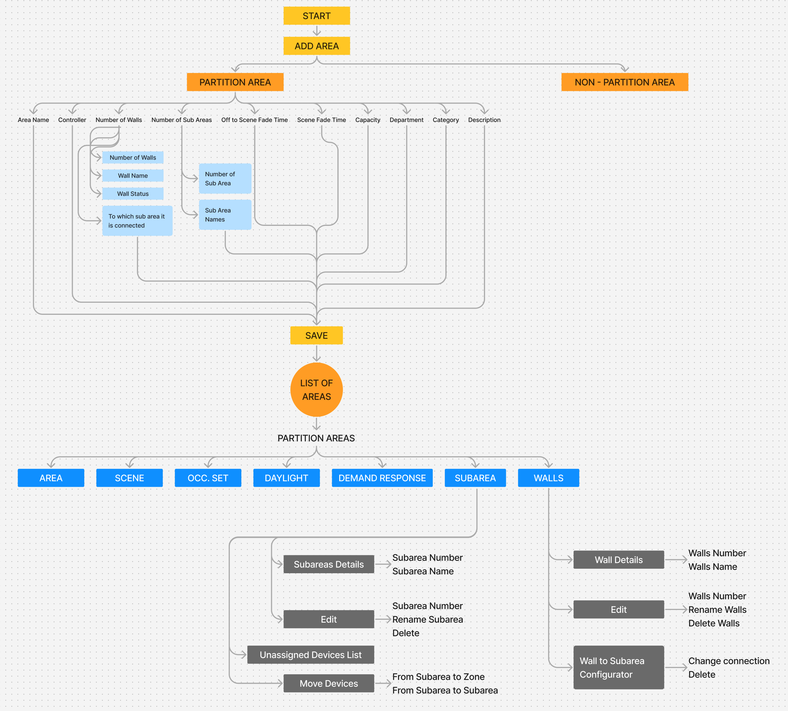
Showing it to real customers
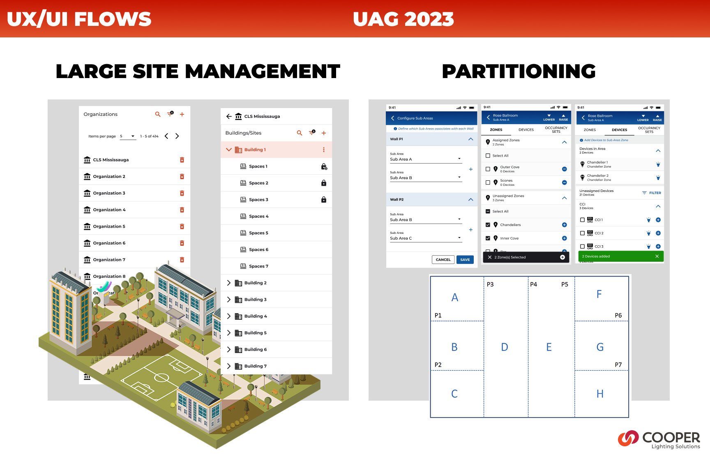
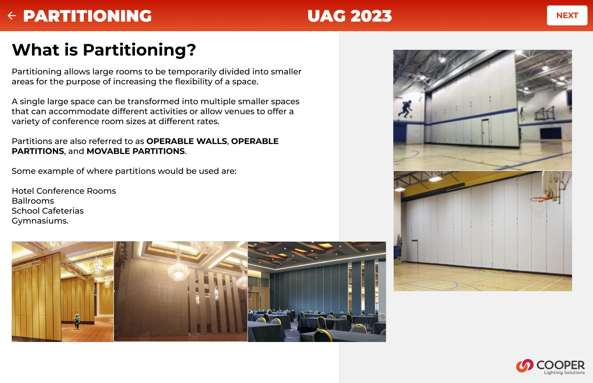
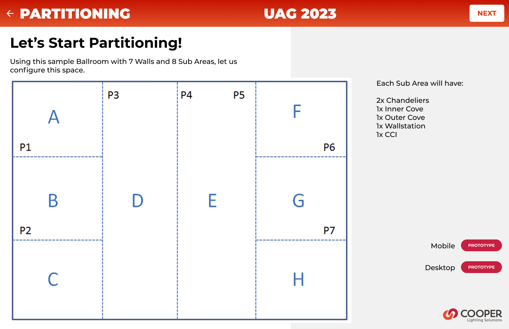
What one of them told us
“The wall moves. The lights should just know. I don’t want to go find a laptop and open a program, I’m holding a phone.” A technician who sets these systems up, in a research interview
The finding that decided everything
Almost everyone doing this job uses their phone as their main tool on site. A desktop-only tool means carrying a laptop, finding somewhere to plug it in, and looking away from the room you are working in. Building for the phone was not a nice extra. Without it, nobody would have used this.
05 What we learned
Five things testing taught us
-
How people think
People think in rooms, not in numbers
Technicians talk about a space the way you would: “the left half of the ballroom”. Nobody says “groups 3 and 4 in area 12”. So the app had to work that way too, and the smaller rooms had to feel like rooms rather than rows in a database. That is why the plan of the space and the naming came first, and the lists of equipment came second.
-
The setup steps
Linking a wall to its sensor confused everybody
In the early prototypes, connecting a wall to the little wire that reports its position was misunderstood by every single person who tried it. They did not know which step it happened in, what they were connecting, or what would win if two things disagreed. Fixing that became the whole point of the redesign.
-
Finding your way
Show a little, then more when asked
Putting every detail of every smaller room on one page was too much to take in, and in a big building it made the page take three or four seconds to appear. Letting each room open and close on its own, and only fetching its details when you open it, fixed the clutter and the slowness in one move.
-
Phone and computer
The computer version should copy the phone, not do its own thing
The first computer designs put a list down one side and the details down the other. It would have been more work to build for almost no benefit. People move between their phone and a computer during the same job, so keeping the two identical meant there was nothing new to learn.
-
The awkward cases
The empty screens are what separate finished from sloppy
What does the screen say when nothing is connected yet? When a group of lights has not been given a room? When a wall is set up but its sensor has not reported in? Testing dragged all of these into the open, and designing them properly is what made the thing feel finished.
06 The process
How we got there
Design ran at the same time as the hardware and the software were being built, which is normal for this kind of product and means nothing stands still. It only works if you talk to the engineers constantly, so that what you draw is something they can actually build that month.
-
Phase 01
Working out the problem
Interviews with the technicians and with the engineers who visit sites. Time spent learning the hardware and watching how an install actually goes. Then wrote down, plainly, what problem we were solving and the rules we would design by.
- Interview notes
- Design rules
- Plain-English glossary
- List of limits
-
Phase 02
Deciding how it all nests
Worked out where a splitting room sits inside the app’s existing structure, and how rooms, smaller rooms, walls, groups of lights and equipment all relate to each other. Checked it all against the engineers, because a room split into ten would have asked the server for far too much at once.
- Structure diagram
- How you move around
- Budget for server requests
- Content check
-
Phase 03
First draft, first prototype
Drew every path that mattered: making a room, setting up its smaller rooms and walls, grouping the lights, moving equipment, checking on the walls. Built a clickable version for the phone. Put it in front of the team to pull apart, then in front of the board that approves work.
- Phone screens in Figma
- Computer version
- The awkward cases
- Prototype one
-
Phase 04
Testing, then rebuilding
Two rounds of people trying the prototype. They showed us the wall-linking confusion, that the smaller rooms were hard to find your way around, and that the phone and the computer needed to match. The three-step setup, the room page and the wall screens all changed a lot as a result.
- Panel feedback list
- Prototypes two and three
- Board review
- Record of decisions
-
Phase 05
Handing over, and staying close
Final drawings handed over in Figma with notes, a description of every piece, and each screen’s states written out. Then stayed with the engineers while they built it, to sort out the surprises and adjust where the technology pushed back.
- Annotated drawings
- Piece-by-piece library
- Reviews with the builders
- Launch
Building a room: first try, second try
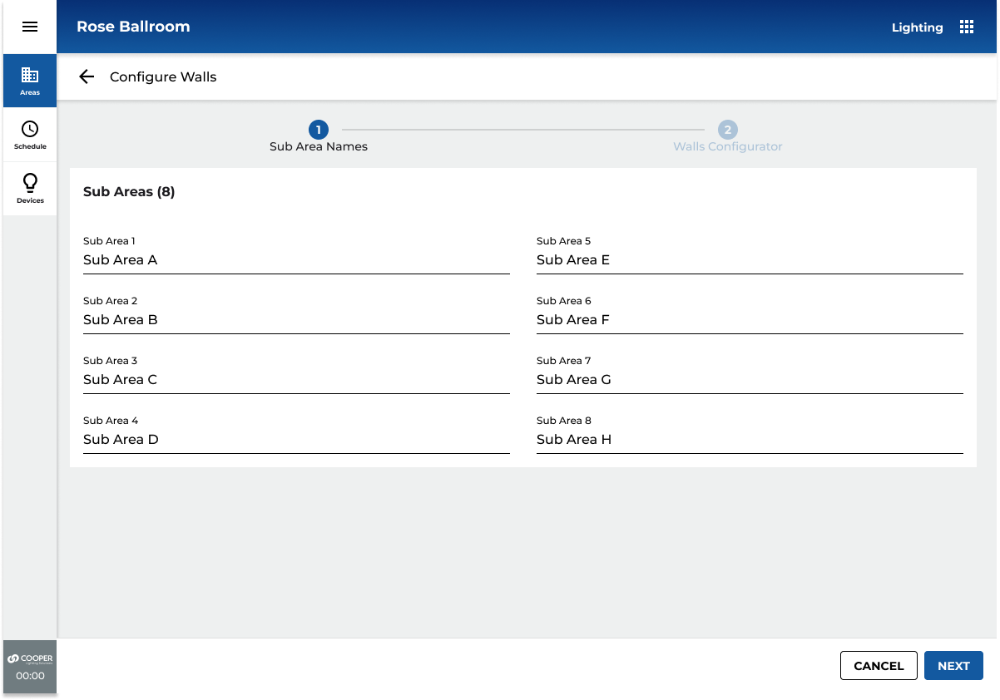
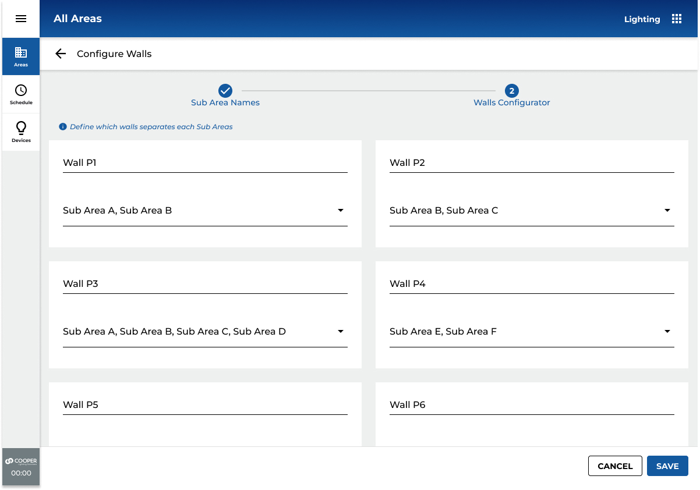
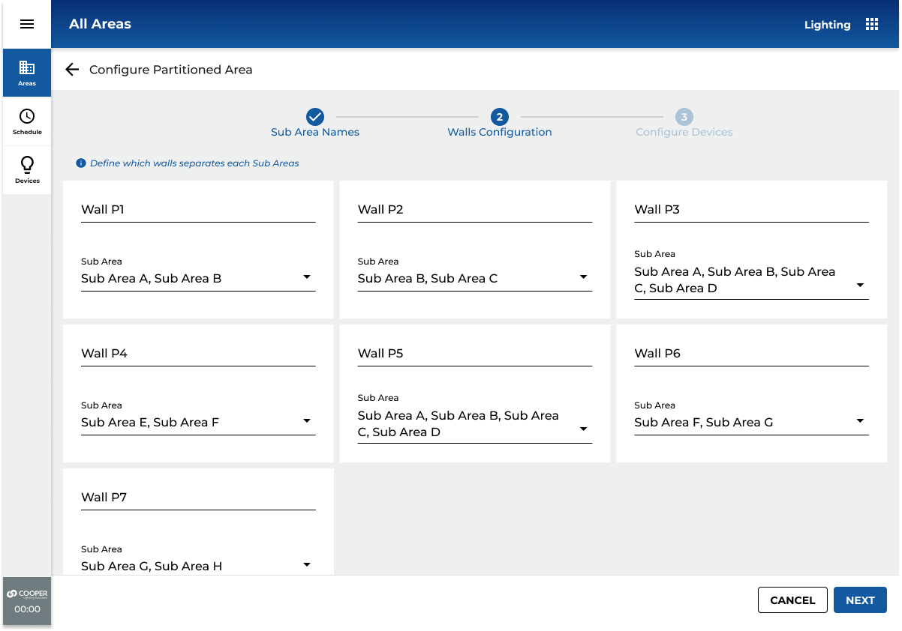
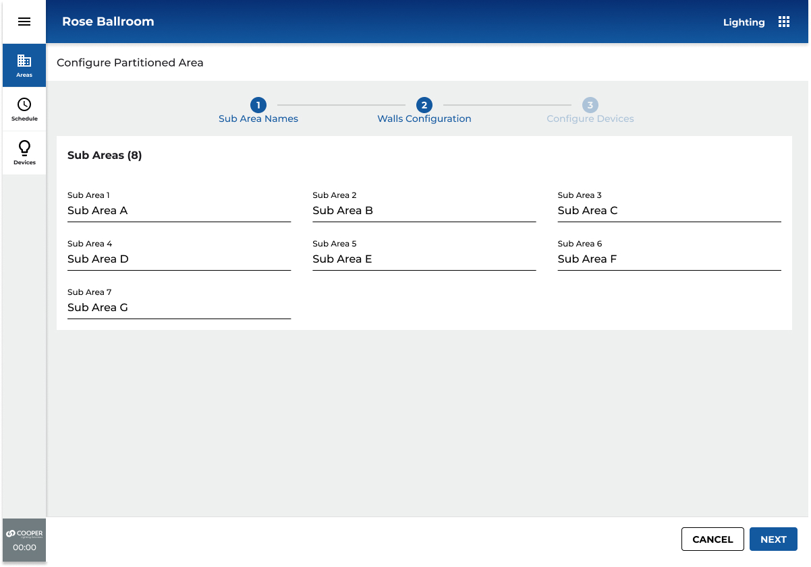
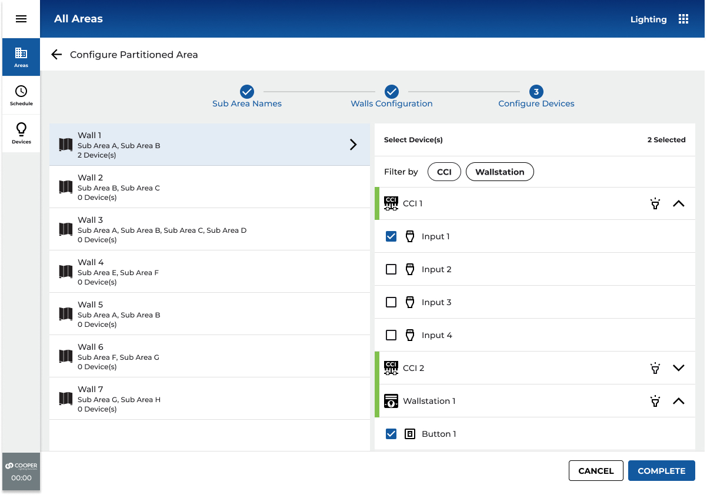
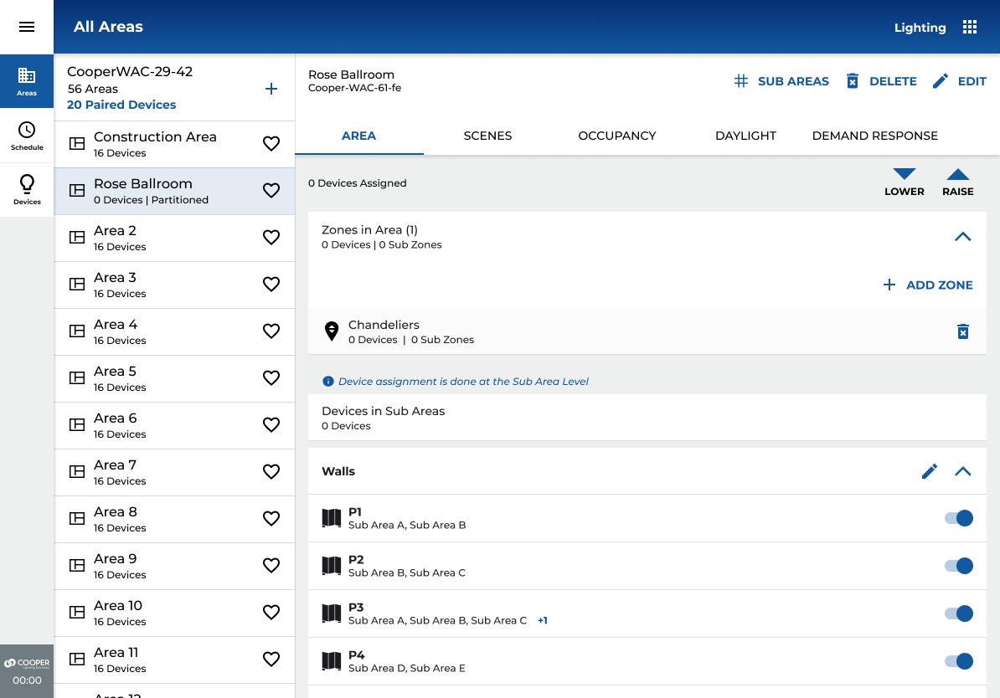
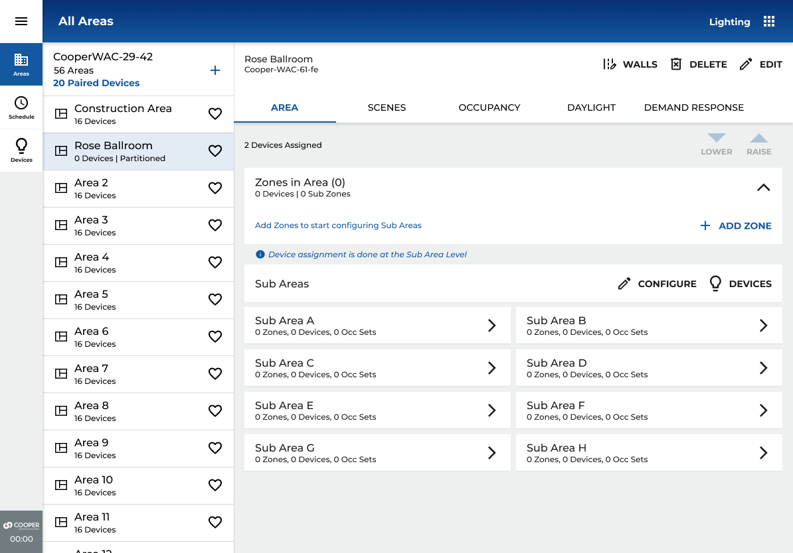
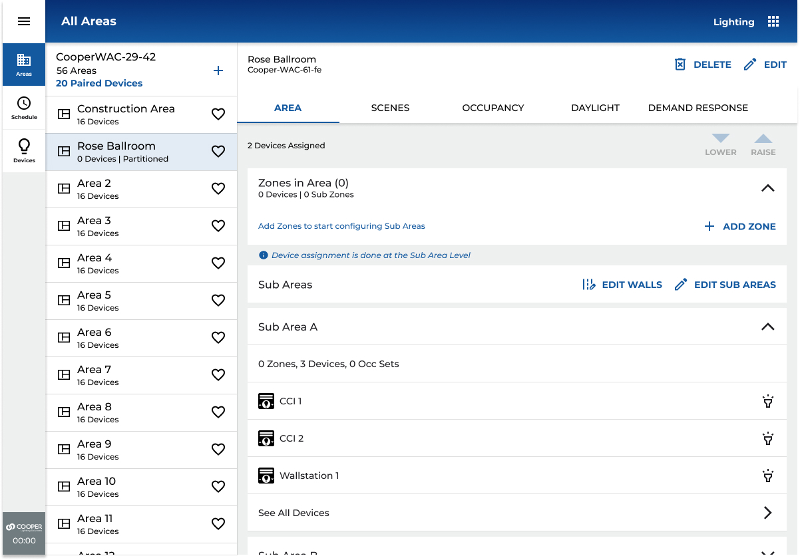
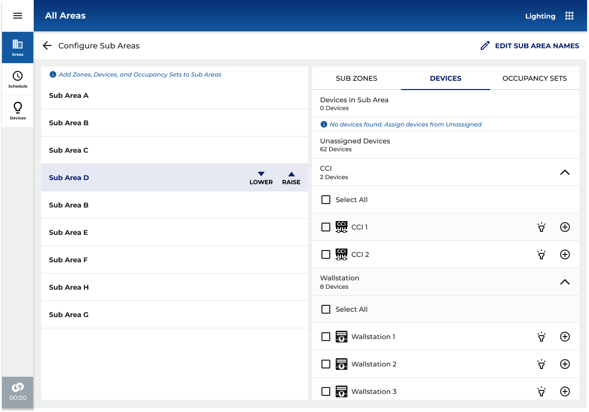
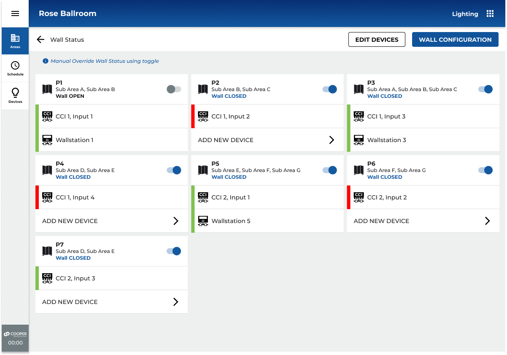
07 The hard calls
The hard calls
Every real decision cost something. These are the six that shaped the product most, and why they went the way they did.
-
A step-by-step bar, or a circle of steps?
The team leaned towards showing the three setup steps arranged in a circle. I argued for a plain left-to-right bar. Circles are not against Google’s design rules, but they are unusual enough that people stop and work them out, and these are people trying to finish a job quickly. The straight bar was clearer, and we could test it properly. The customer panel agreed.
-
How much detail to show on a room’s page
Someone senior wanted every detail of every smaller room visible straight away. The engineers worked out that would mean thirty-odd requests to the server for a room split into ten, adding three to five seconds before anything appeared. So I designed rows you open one at a time, each fetching its own details, with a short summary showing while closed. Everyone got the layout they wanted, and the page stayed quick.
-
Should the computer version look like the phone?
The early computer designs had a list down one side and the details down the other. But people swap between their phone and a computer in the middle of the same job, and the phone layout had already tested well. A separate computer layout meant more to build for no real gain. Keeping them identical meant nothing new to learn.
-
A switch between two views, or one page?
An early idea put a switch at the top to flip between the smaller rooms and the equipment. Switches like that leave people unsure which mode they are in, and flipping it meant another wait while the app fetched things. I merged the two into one page with rooms you open and close. The switch disappeared, and there was less to keep track of.
-
Where the wall button lives
The button that shows wall status needed a home. One suggestion was to replace the equipment button. I put it in the top bar instead, where the app already keeps its quick shortcuts. That leaves room for more shortcuts later without crowding the main buttons, and it sits in the same place on a phone and on a computer.
-
Should finishing setup move things on its own?
An early idea moved equipment into the smaller rooms by itself once you finished the third step. Testing showed people found this alarming: their setup had changed and they did not know why. So the third step now only says what the switches and wires should do. Moving equipment stays a separate thing you choose to do on purpose.
The whole thing on a phone
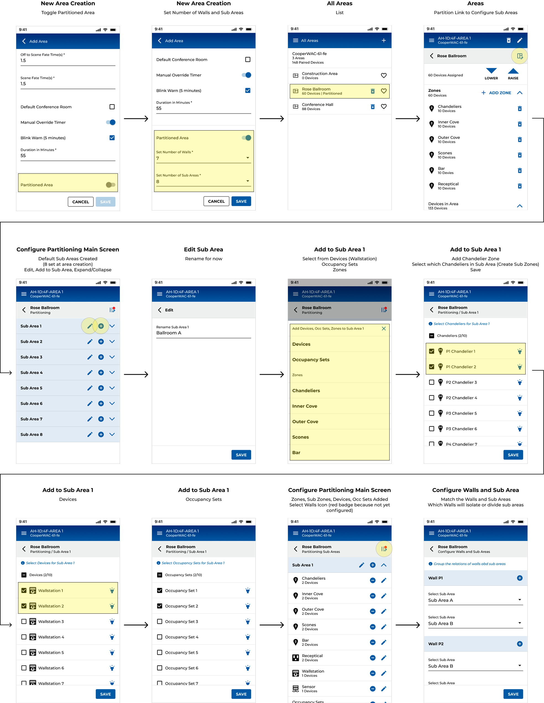
08 What shipped
What shipped
It shipped as something you can run entirely from a phone, the first of its kind in this industry. It covers the whole life of a splitting room: building it, setting it up, running it, and keeping an eye on it.
-
Making the room
A new kind of room in the app. You say how many smaller rooms and how many walls up front, so the shape of the space is settled before you start on the lights.
-
Setup in three steps
A guided bar across the top: make the room, sort the smaller rooms and their lights, then connect the walls. Every step fits a phone screen. No laptop needed.
-
Assigning lights and walls
Two tabs, one for the smaller rooms and one for the walls, each with its own clear steps. Nothing gets connected behind your back.
-
Managing the smaller rooms
Rooms you open and close, each fetching its details only when you open it. Closed, a room still tells you how many groups of lights it has, how much equipment, and which sensors it uses.
-
Moving equipment around
A clear way to move a light or a switch up to the whole room, into one of the smaller rooms, or into a single group of lights. Groups that have not been given a room say so, which stops things landing in the wrong place.
-
Wall status, live
Every wall, open or shut, right now, with the equipment attached to it. The button in the top bar gets you here from anywhere in the room.
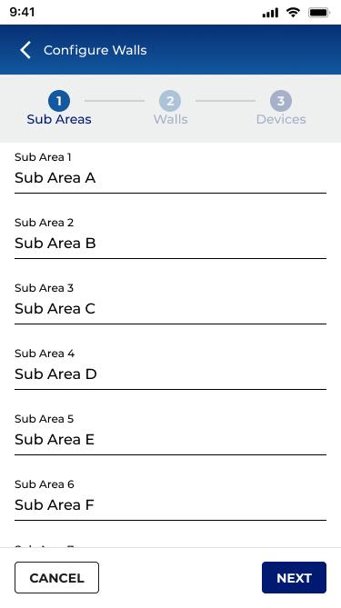
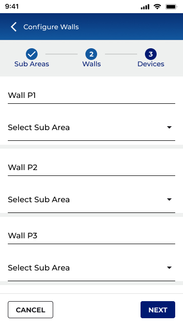
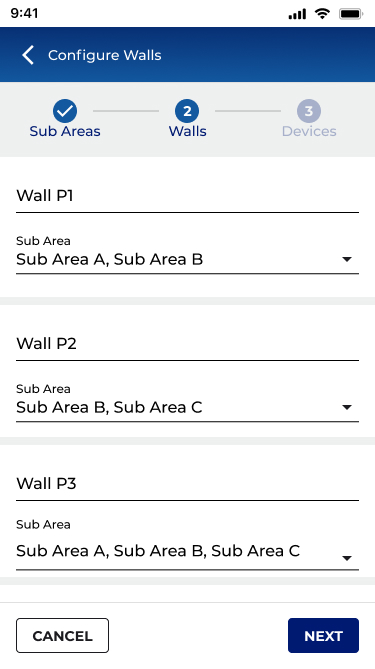
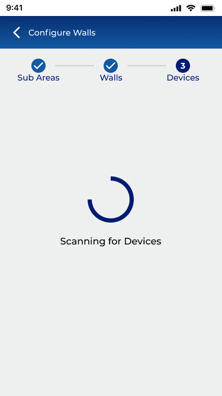
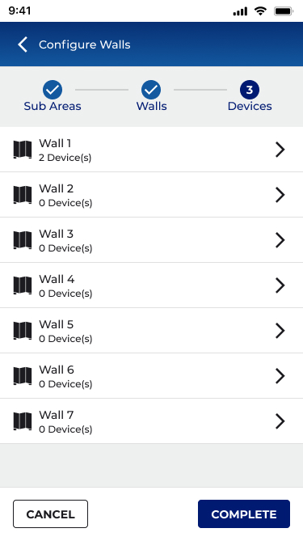
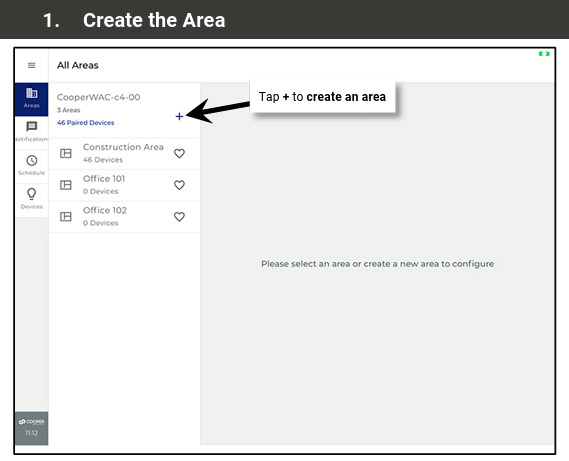
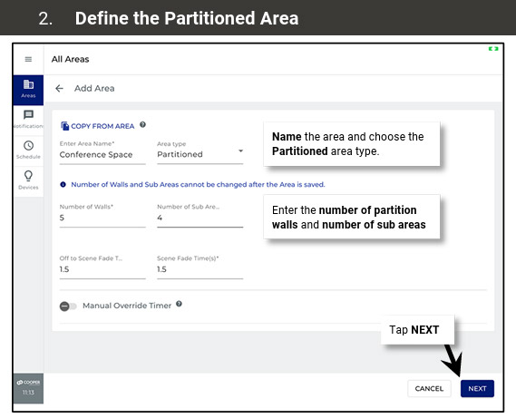
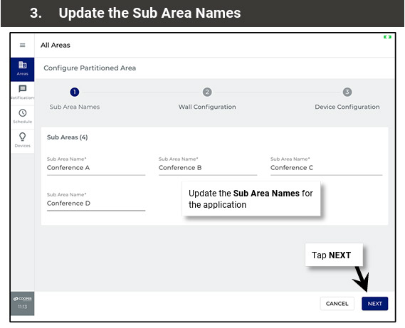
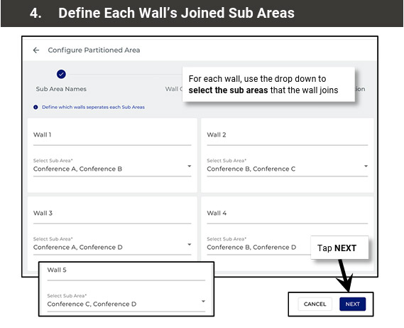
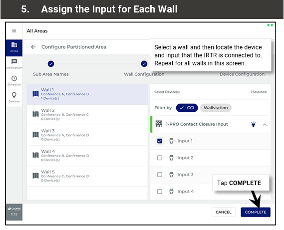
09 Results
What it achieved
The numbers below come from the customer panel sessions, the engineers’ own analysis, interviews with the field teams, and the product team’s records. Where you see a range, it is because sites differ.
What it meant for the business
3 New kinds of customer the company could sell to: hotels, schools and universities, and big company campuses Off the table before, because setup needed a desktop computer
40 to 60% Less time spent setting a building up on site, according to the field teams Reported by the engineers who visit sites, phone against laptop. It held up across hotels and schools alike
$0 Extra kit needed on site. The phone does what the laptop used to No more carrying a dedicated laptop out to every job
~80% Fewer call-outs caused by someone rearranging a room The sensor handles wall changes on its own, so nobody has to drive out. A real saving on running costs for the people who look after buildings
Tier 1 Treated as a top selling point when bidding for hotel and big company work Named in the sales material and the competitive comparisons after launch
On schedule Shipped on time, nothing cut, working on both phone and computer A year of work, three rounds of prototypes, signed off by the approving board
What it meant for the design
3 Rounds of prototypes tested with a customer panel before any code was written Built in Figma for both phone and computer, signed off after each round
~40 to 85% People who could finish the three-step setup on their own Round one to round three, a jump of 45 points
11+ Serious problems found, written down and fixed before building started All in one shared list. None of them reached the finished product, and nothing that used to work got broken
Rounds 1 to 3 The wall-linking confusion went from the number one complaint to not being mentioned at all It drove the whole redesign: the three steps, saying plainly what each button does, and a blink to identify a piece of equipment. Gone from round three feedback entirely
6 Big decisions written down with the reasoning, and signed off The step bar, loading one room at a time, matching phone and computer, dropping the switch, moving equipment, and where the wall button lives
2 to 1 Two ways of working became one, so there is nothing to relearn between your phone and a computer The phone design was carried over to the computer, and tested on both
The whole picture
| What | Before | After | Change |
|---|---|---|---|
| Time to set up a splitting room on site | 45 to 60 minutes, and you needed a laptop | 15 to 25 minutes, on a phone | 40 to 60% faster |
| Call-outs when a room is rearranged | One every time a wall moved | The sensor handles it, nobody visits | ~80% fewer |
| Kinds of customer the company could sell to | None. Desktop-only setup blocked it | Three or more: hotels, schools, big campuses | 3 new |
| People who finished the three-step setup | ~40% in round one | ~85% by round three | 45 points better |
| Serious problems that reached the finished product | 11 or more found before testing | None shipped | All fixed |
| Server requests to open a room split into ten | 30 or more, all at once | 3, one each time you open a room | ~90% fewer |
| Time for a room’s page to appear | 3 to 4 seconds or more | Under a second, normally | Over 70% faster |
| Reprogramming needed when a wall moves | The whole thing, by hand | None. The sensor does it | Gone |
| Ways of working people had to learn | Two. Phone and computer were different | One, the same on both | Halved |
Why the business cared
Before this shipped, the company could not put in a serious bid for a hotel ballroom, a school gym or a big conference hall. Needing a desktop computer just to set the system up was enough to lose the deal. Designing for the phone opened those doors.
The drop in call-outs mattered immediately to the people who run buildings. Sending a technician out for something the system now handles by itself is pure cost, and across a large hotel or campus it adds up fast.
What the rest of the product took from it
This created a way of handling rooms inside rooms that the team then reused elsewhere. Opening one thing at a time, and only fetching its details when you open it, became the house standard. And the rule that the app never moves your equipment without being asked was written down as a guideline. It carried straight into the hospital lighting project that came next.
The way we collected feedback, one shared list reviewed by the approving board, became how the team ran design decisions from then on.
10 Looking back
What I’d do differently
Every project teaches you something. Here is the honest version.
-
What worked well
Designing for the phone first
Starting on the small screen forced decisions that made the computer version better. Showing a little and then more, and opening one room at a time, both came from not having enough space on a phone. They turned out to fix the slowness on the computer too, almost by accident.
-
What I’d do differently
Get on site sooner
We did watch real installs, but I would spend far more of that time in actual hotel ballrooms before drawing anything. The wall-linking confusion might have turned up in week two instead of week eight.
-
What worked well
One shared feedback list
Putting all the test feedback in one list, with a column for the problem, the proposed fix, what people said about it, and whether it was approved, made everyone accountable and cut the arguing. Decisions came from what we watched people do, not from who spoke loudest.
-
What I’d do differently
Agree the plumbing earlier
The slow-page problem turned up late, because design and engineering were running side by side without agreeing exactly what data would move between them. Next time I would sit down with the engineers and stress-test that while the structure is still on paper, before anything is drawn in detail.
-
Lasting principle
Setup should be deliberate, never automatic
Every time we tried to be helpful and move something on the user’s behalf, testing showed it made them anxious. The rule we landed on, that the system can suggest but the person confirms, became how this product handles setup everywhere. It carried into the hospital lighting work that followed.
-
Future opportunity
Show it on a floor plan
The thing the technicians asked for most was a floor plan you can look at, with the room boundaries and the walls drawn on it. It did not make this release. Given how physical this job is, being able to see the space would probably cut mistakes more than anything else on the list.